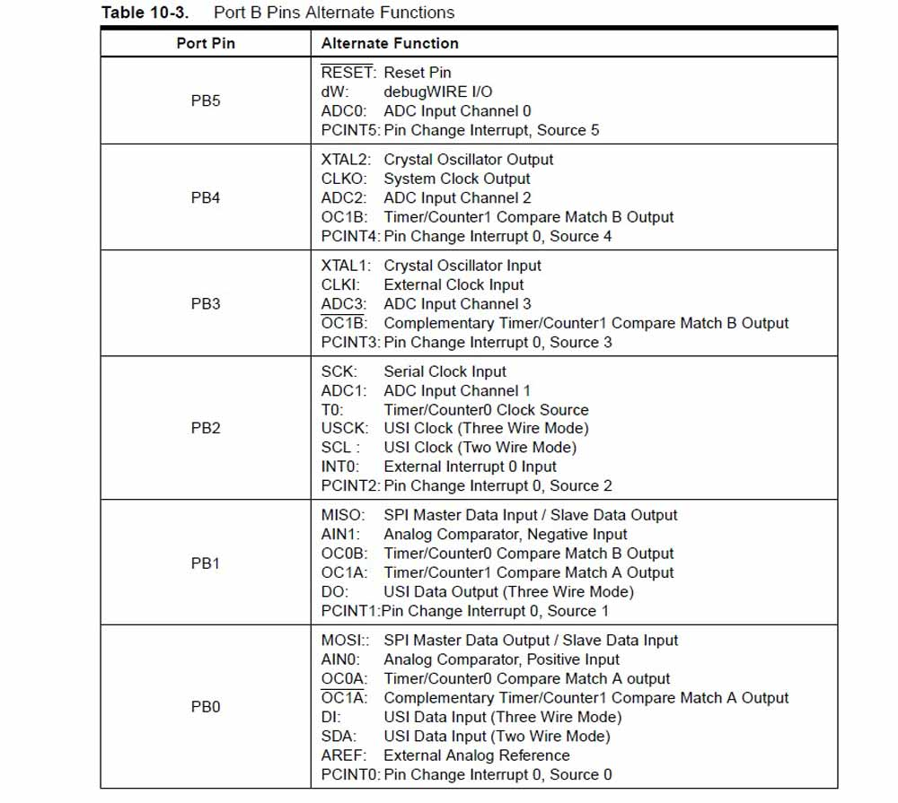

Exercise 11 Input Devices
Requirement
- Measure something: add a sensor to a microcontroller board that you have designed and read it
Atmel ATtiny 45
I started this week's assignment by reading up on ATtiny45 microchip. To locate the datasheet of an MCU, go to the Atmel website >> Atmel AVR 8-bit and 32-bit Microcontrollers >> tinyAVR MCUs >> ATtiny45. The ATtiny45 is a low-power CMOS 8-bit microcontroller that has an internal oscillator of 8MHz. The high-performance, low-power Atmel 8-bit AVR RISC-based microcontroller combines 4KB ISP flash memory, 256-Byte EEPROM, 256B SRAM, 6 general purpose I/O lines, 32 general purpose working registers, one 8-bit timer/counter with compare modes, one 8-bit high speed timer/counter, USI, internal and external Interrupts, 4-channel 10-bit A/D converter, programmable watchdog timer with internal oscillator, three software selectable power saving modes, and debugWIRE for on-chip debugging. The device achieves a throughput of 20 MIPS at 20 MHz and operates between 2.7-5.5 volts. Idle mode stops the CPU while allowing the SRAM, Timer/Counter, ADC, Analog Comparator, and Interrupt system to continue functioning. Power-down mode saves the register contents, disabling all chip functions until the next Interrupt or Hardware Reset. ADC Noise Reduction mode stops the CPU and all I/O modules except ADC, to minimize switching noise during ADC conversions.

Phototransistor
I would like to measure the presence of light using a phototransistor for this assignment. I have taken reference from the board in class lecture to build the board. At first all was well, I was able the stuff the board and connect to my Arduino isp. But I didn't apply enough solder to the 2x3 headers and the whole header came off, together with the copper layer on the pad. It left me with no choice but to remill the board. But my 2nd attempt to mill was unsuccessful because the bit was blunt. So time was wasted testing what went wrong and fetching a new bit and milling again. Things to note: the ATtiny chip and phototransistor have polarity. Polarity on the ATtiny chip is denoted by a faint dot on pin 1 and polarity on the phototransistor is denoted by a green marker that should face the "C" which stands for Collector. The other side, "E" stands for emitter.
Components needed
- 1 x ATTINY85
- 1 x 3X2 PIN HEADER (ARVISP SMD)
- 1 X 1X6 FTDI SMD HEADER
- 1 x CAPACITOR 1 uf
- 1 x Phototransistor
- 1 X 10 k ohm RESISTOR RES-US1206FAB
- 1 X 49.9 k ohm RESISTOR RES-US1206FAB


Thermistor
I would be measuring temperature using a NTC thermistor for this assignement. We use a NTC thermistor for this assignment. Many NTC thermistors are made from a pressed disc, rod, plate, bead or cast chip of semiconducting material such as sintered metal oxides. They work because raising the temperature of a semiconductor increases the number of active charge carriers - it promotes them into the conduction band. The more charge carriers that are available, the more current a material can conduct. To measure temperature, we need to measure the resistance. However, a microcontroller does not have a resistance-meter built in. Instead, because it has an analog-digital-converter (ADC), we can convert the resistance into a voltage, and we do that by adding another resistor and connecting them in series. Now we just measure the voltage in the middle, as the resistance changes, the voltage changes too.
Components needed
- 1 x ATTINY85
- 1 x 3X2 PIN HEADER (ARVISP SMD)
- 1 X 1X6 FTDI SMD HEADER
- 1 x CAPACITOR 1 uf
- 1 x THERMISTOR NTC 10K OHM 1206
- 4 X 10 k ohm RESISTOR RES-US1206FAB
- 1 X 49.9 k ohm RESISTOR RES-US1206FAB
Communicating with the sensors
Even now, I was not able to understand enough to know how to load c code into the MCU using hex file and the Make command. I really need more time to read up on how to communicate with the boards and using python. Meanwhile I have successfully loaded the arduino program to the chip using the Arduino as a ISP. I could test the sensors and receive a response via the FTDI USB to TTL Serial Converter to be displayed on the Putty terminal.
Phototransistor program
Having noted that shining a touch light to the sensor brings the value to less than 100-300, I wrote the following code on Arduino IDE.
void loop() {
sensorValue = analogRead(sensorPin);
mySerial.print(sensorValue);
if (sensorValue < 300)
mySerial.println(" I sensed bright light.");
else
mySerial.println(" Not bright enough for me.");
delay(5000);
}
Thermistor program
I figured that if resistance value decreases with heat, and increases with cold sensation. I also noted that at aircon room temperature, resistance is between 500-530. Human warmth will bring the value down to about 490-500. Having noted these, I wrote the following code on Arduino IDE.
void loop() {
sensorValue = analogRead(sensorPin);
//mySerial.print(sensorValue);
if (sensorValue < 500) {
mySerial.println(" I sensed warmth.");
}
else if (sensorValue == 1023) {
mySerial.println(" Reading error.");
}
else if (sensorValue >= 540) {
mySerial.println(" It's cold.");
}
else {
mySerial.println(" I feel normal.");
}
delay(1000);
}
Programming with WinAVR
I came back to week 11 to programme the input boards using WinAVR in week 13, after I completed the output devices. One important thing to note regarding Rx and Tx is this: Because RX and TX labels are with respect to the device itself, in the usual circumstance, the RX from one device should go to the TX of the other, and vice-versa. However, in this situation, the RX pin on the board is sending out information, so in this case it goes to the RX pin on the FDTI. Basically I did not make any additional changes to the c program and the make file because my board is exactly like the one on the class page. I downloaded the hello.temp.45.py from class page to take reading of the room temperature. (See video below)
Successfully flashing the microchip set:
C:\Users\yoruichin\Dropbox\FAB\Week 11 - Input\temperature>cp hello.temp.45.make makefile
C:\Users\yoruichin\Dropbox\FAB\Week 11 - Input\temperature>make
avr-gcc -mmcu=attiny45 -Wall -Os -DF_CPU=8000000 -I./ -o hello.temp.45.out hello.temp.45.c
avr-objcopy -O ihex hello.temp.45.out hello.temp.45.c.hex;\
avr-size --mcu=attiny45 --format=avr hello.temp.45.out
AVR Memory Usage
----------------
Device: attiny45
Program: 428 bytes (10.4% Full)
(.text + .data + .bootloader)
Data: 0 bytes (0.0% Full)
(.data + .bss + .noinit)
C:\Users\yoruichin\Dropbox\FAB\Week 11 - Input\temperature>avrdude -P com4 -c stk500v1 -b 19200 -p t45 -U flash:w:hello.temp.45.c.hex
avrdude: please define PAGEL and BS2 signals in the configuration file for part ATtiny45
avrdude: AVR device initialized and ready to accept instructions
Reading | ################################################## | 100% 0.08s
avrdude: Device signature = 0x1e9206
avrdude: NOTE: FLASH memory has been specified, an erase cycle will be performed
To disable this feature, specify the -D option.
avrdude: erasing chip
avrdude: please define PAGEL and BS2 signals in the configuration file for part ATtiny45
avrdude: reading input file "hello.temp.45.c.hex"
avrdude: input file hello.temp.45.c.hex auto detected as Intel Hex
avrdude: writing flash (428 bytes):
Writing | ################################################## | 100% 0.72s
avrdude: 428 bytes of flash written
avrdude: verifying flash memory against hello.temp.45.c.hex:
avrdude: load data flash data from input file hello.temp.45.c.hex:
avrdude: input file hello.temp.45.c.hex auto detected as Intel Hex
avrdude: input file hello.temp.45.c.hex contains 428 bytes
avrdude: reading on-chip flash data:
Reading | ################################################## | 100% 0.36s
avrdude: verifying ...
avrdude: 428 bytes of flash verified
avrdude: safemode: Fuses OK
avrdude done. Thank you.
C:\Users\yoruichin\Dropbox\FAB\Week 11 - Input\temperature>